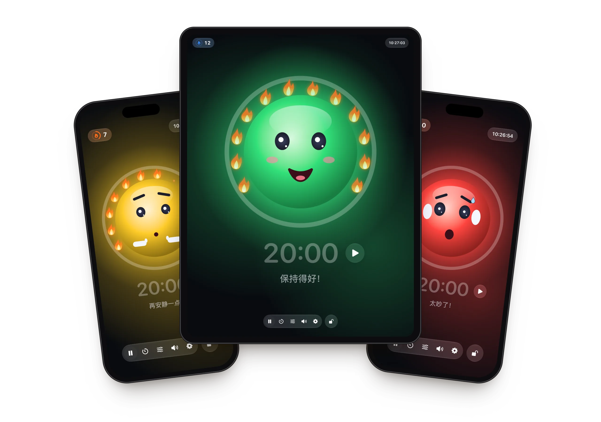
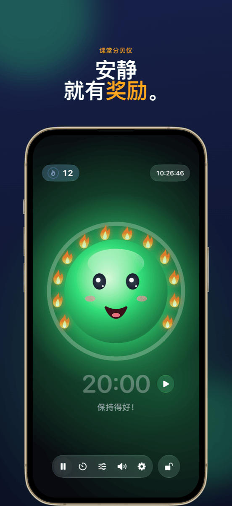
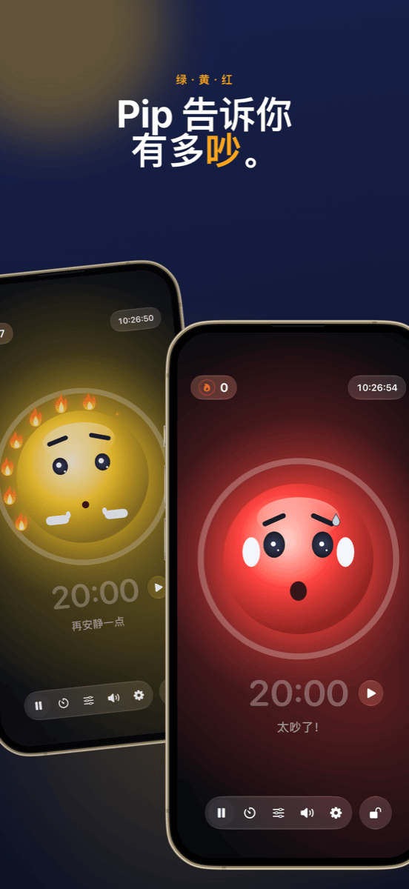
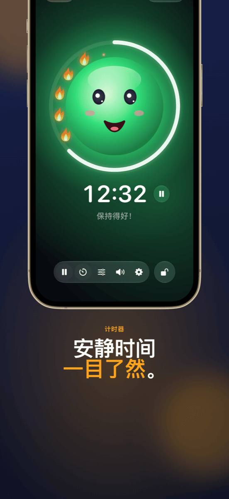
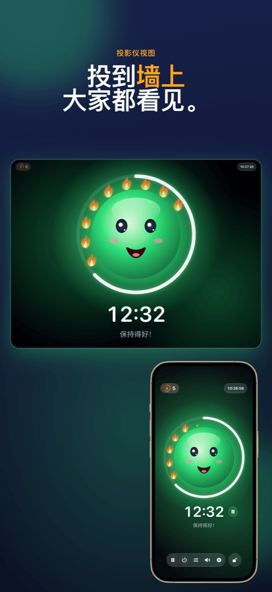
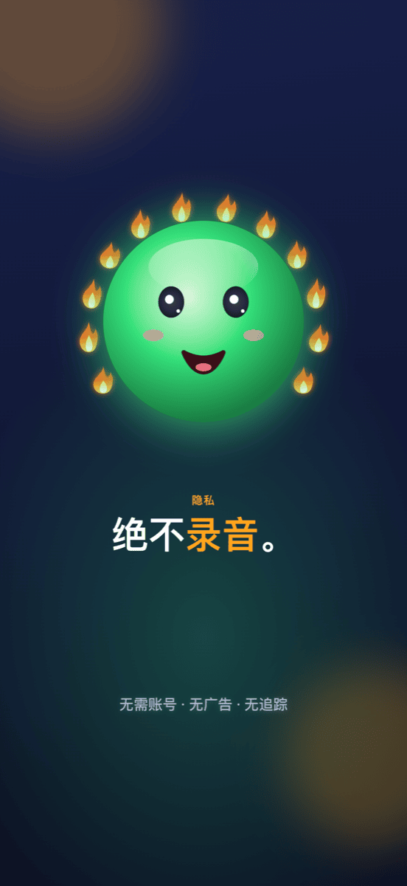

Ruhe
为课堂打造的友好噪音红绿灯：安静做事就有火焰——吵闹也从不惩罚。






功能
带吉祥物的噪音红绿灯
绿、黄、红——一张开心的笑脸显示教室里有多吵。黄色时它轻声说“嘘”，红色时它捂住耳朵。
用火焰代替惩罚
只要保持安静，火焰就会一朵接一朵地点亮。十二朵火焰组成完整的花环，大家一起庆祝。太吵的时候，火焰就会熄灭。
计时器一目了然
吉祥物周围的圆环显示剩余时间。开始和停止就在时间旁边；时间到了，测量会暂停。
投影仪视图
在投影仪或第二块屏幕上，噪音红绿灯全屏显示——控制留在你的 iPad 上。
适合每个班级
用两个滑块设定黄色和红色从何时开始——或者让 Ruhe 听 5 秒钟，自动校准。
锁定控制
用面容 ID 或密码锁定，班里谁也改不了设置。
使用方法
放好 iPad
打开 Ruhe，轻点笑脸——测量开始。
让学生做事
吉祥物向全班显示有多吵，并为每段安静时光收集火焰。
看到成果
下课时，重要的是做到了什么：火焰花环。
指南
帮助与支持
Ruhe 什么也测不到，怎么办？
Ruhe 需要使用麦克风。请前往“设置”→“隐私与安全性”→“麦克风”→“Ruhe”开启。
红绿灯变红太早或太晚。
轻点工具栏中的滑块图标，调整黄色和红色的阈值——或者在班级正常做事时使用“自动设置”。
如何在投影仪上显示 Ruhe？
用线缆或隔空播放把 iPad 连接到投影仪。Ruhe 会自动在那里全屏显示噪音红绿灯，控制留在 iPad 上。
如何把火焰清零？
轻点左上角的火焰计数器。你可以在那里修改火焰数量，或全部清零。如果 Ruhe 在后台超过 10 分钟，下一节课本来就会从 0 开始。
会录音吗？
不会。Ruhe 只测量音量——不会录音、保存或发送任何内容。详情见隐私政策。
没有找到你的问题？
请写信至 info@crabucate.de——我通常在一两天内回复。
让人舒服的安静。
适用于 iPad 和 iPhone——现已登陆 App Store。